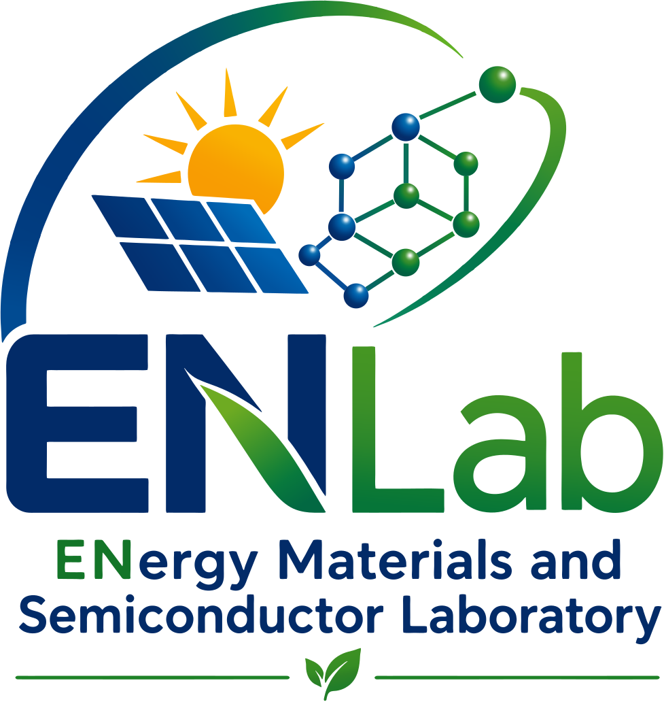
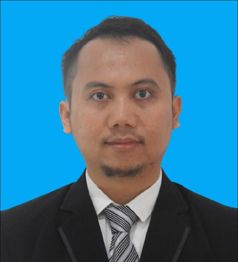

Inovasi
Mengembangkan material fungsional dan arsitektur divais dengan peningkatan kinerja yang terukur.
Kami merancang, mensintesis, dan mengkarakterisasi lapisan tipis serta nanomaterial oksida logam untuk sel surya perovskit, DSSC, superkapasitor, fotodetektor swadaya, sensor, dan fotokatalisis.
ITERA Program Studi Teknik Material, Institut Teknologi Sumatera

ENLab (ENergy Materials and Semiconductor Laboratory) adalah kelompok riset di Program Studi Teknik Material, Institut Teknologi Sumatera, yang berfokus pada desain, sintesis, fabrikasi, dan karakterisasi material energi dan semikonduktor.
Riset kami menjembatani ilmu material, fisika semikonduktor, elektrokimia, dan rekayasa divais - dari penumbuhan lapisan tipis oksida logam hingga pengujian kinerja sel surya, superkapasitor, dan sensor.
Mengembangkan material fungsional dan arsitektur divais dengan peningkatan kinerja yang terukur.
Menghubungkan mahasiswa, peneliti, industri, dan mitra institusi melalui riset yang berdampak.
Membangun keterampilan eksperimen, analisis, dan komunikasi ilmiah bagi peneliti muda.
Enam tema riset utama yang dikerjakan bersama mahasiswa tugas akhir dan mitra kolaborasi.
Fabrikasi MAPbI3 pada kondisi udara terbuka, rekayasa antarmuka TiO2, variasi molaritas prekursor, dan peningkatan stabilitas.
FotovoltaikPewarna alami, fotoanoda semikonduktor, elektrolit, dan konversi energi surya berbiaya rendah.
Energi SuryaNanorod MnO2, komposit NiO-MnO2, evolusi fasa akibat suhu sintering, dan penyimpanan energi elektrokimia.
Penyimpanan EnergiZnO, TiO2, NiO, ITO, dan oksida terdoping (Cu, Fe, Mg, Ni, Al, Ti) melalui spray pyrolysis, spin coating, dan hidrotermal.
Material FungsionalFotodetektor swadaya berbasis heterojunction ZnO/p-Si, deteksi UV, dan sensor gas berlapis nanofiber.
Divais CerdasHeterojunction CeO2/ZnO dan film TiO2 termodifikasi untuk degradasi polutan organik dalam air limbah.
Material BerkelanjutanDipimpin oleh Dr. Eka Nurfani bersama mahasiswa sarjana Teknik Material ITERA.

Kepala Laboratorium - Lektor Kepala
Fisika Material - Lapisan Tipis Oksida - Divais Energi Menyelesaikan S-1 Fisika di Universitas Jenderal Soedirman, lalu S-2 dan S-3 Fisika Material di Institut Teknologi Bandung melalui program PMDSU. Aktif meneliti lapisan tipis ZnO dan TiO2 sejak 2014.Sarjana Teknik Material
Menjalankan riset sel surya perovskit, DSSC, superkapasitor, TCO, dan MXene sebagai proyek tugas akhir.ITERA - ITB - BRIN - Mitra Internasional
Kolaborasi lintas institusi pada skema RIIM LPDP-BRIN, Penelitian Fundamental Kemdikbudristek, dan Riset Kolaborasi Indonesia.Lulusan sejak 2019
Lebih dari 70 mahasiswa telah menyelesaikan tugas akhir di laboratorium ini, sebagian melanjutkan studi pascasarjana.Laboratorium mengoperasikan peralatan komersial sekaligus instrumen rakitan sendiri yang dirancang dan dibangun di ITERA.
Spin coater Ossila, spray pyrolysis berbasis nebulizer, hot plate magnetic stirrer, dan tungku pemanas.
Autoclave hidrotermal 100 mL (6 unit), preparasi prekursor, sonikasi, pengadukan, dan perlakuan panas.
Stasiun pengukuran J-V dengan simulator surya LED rakitan sendiri, stasiun light soaking untuk uji stabilitas, dan sel elektrokimia kustom 100 mL.
Akses ke fasilitas karakterisasi struktur, morfologi, optik, dan elektrokimia (XRD, SEM, UV-Vis DRS, voltametri siklik).
Spin coater, stasiun simulator J-V berbasis LED, dan stasiun light soaking dirancang dan dirakit di laboratorium beserta dokumentasi manual pembuatannya.
57 artikel pada jurnal internasional bereputasi, jurnal nasional, dan prosiding konferensi sejak 2015.
Riset laboratorium didukung pendanaan nasional dan internal institusi.
Riwayat lengkap tersedia pada CV
Mata kuliah yang diampu di Program Studi Teknik Material dan Tahap Persiapan Bersama. Slide kuliah akan tersedia untuk diunduh secara bertahap.
SEM, TEM, XRD, XRF, UV-Vis, PL, dan voltametri siklik.
Elektrostatika, magnetostatika, gelombang EM, dan fisika modern.
Struktur keramik, sintering, sifat dielektrik, dan sifat optik.
Kami menerima mahasiswa tugas akhir, peneliti, mitra akademik, dan kolaborator industri yang bekerja pada material maju dan teknologi energi berkelanjutan.